For my Minor, I decided to spend several months in Japan to learn the Japanese language and culture.
I joined EF (Education First), an international language school located in the heart of Shibuya, Tokyo. During my stay, I attended Japanese language classes and had the opportunity to experience Japanese culture firsthand.
Outside of my classes, I explored different parts of Japan, visited cultural landmarks, and practiced Japanese in everyday situations. This allowed my to combine my academic goals with my personal interest in Japan and its culture.
During my time in Japan, I learned a lot about the Japanese language and culture while exploring the country and experiencing everyday life firsthand.
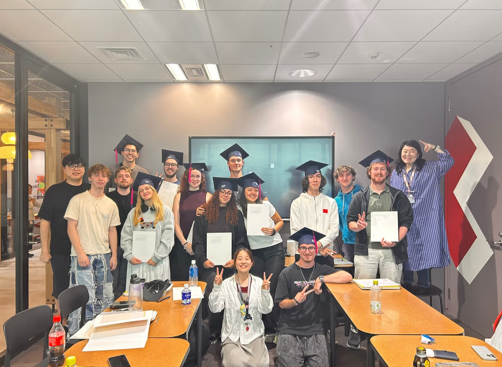
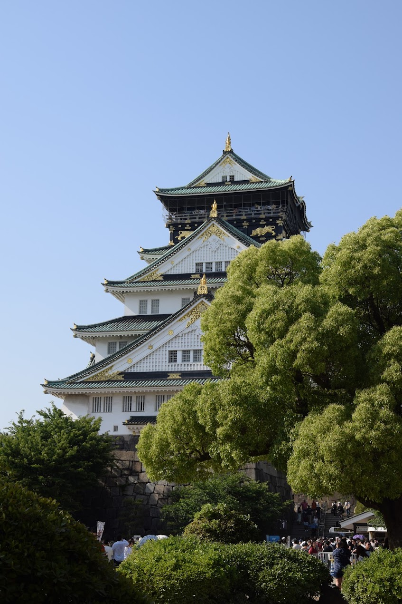
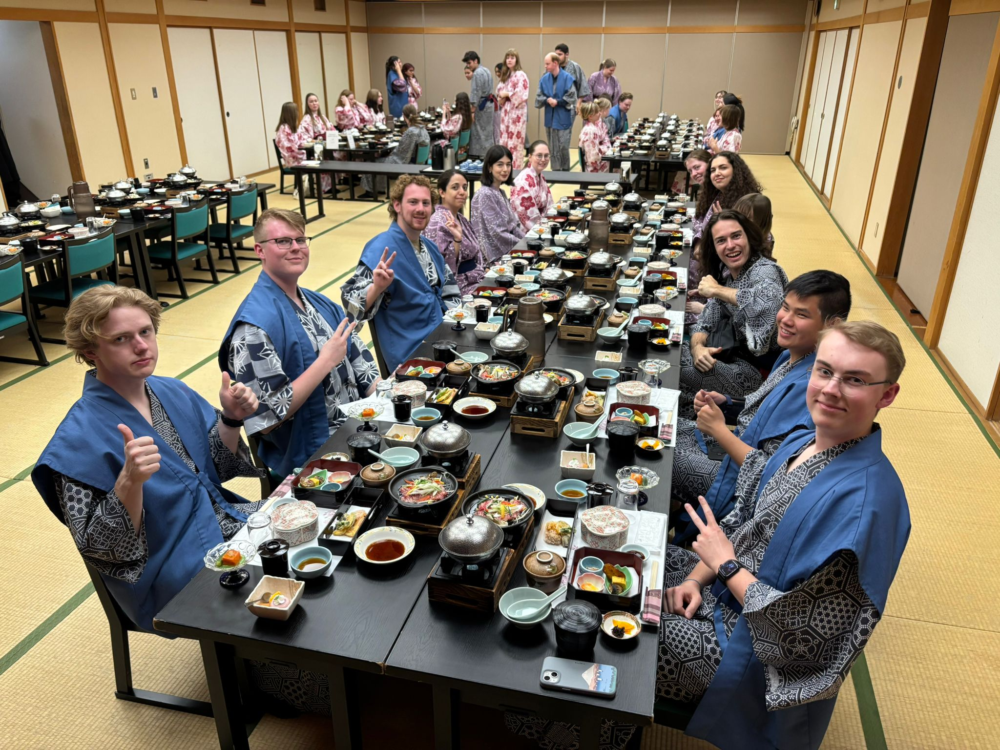
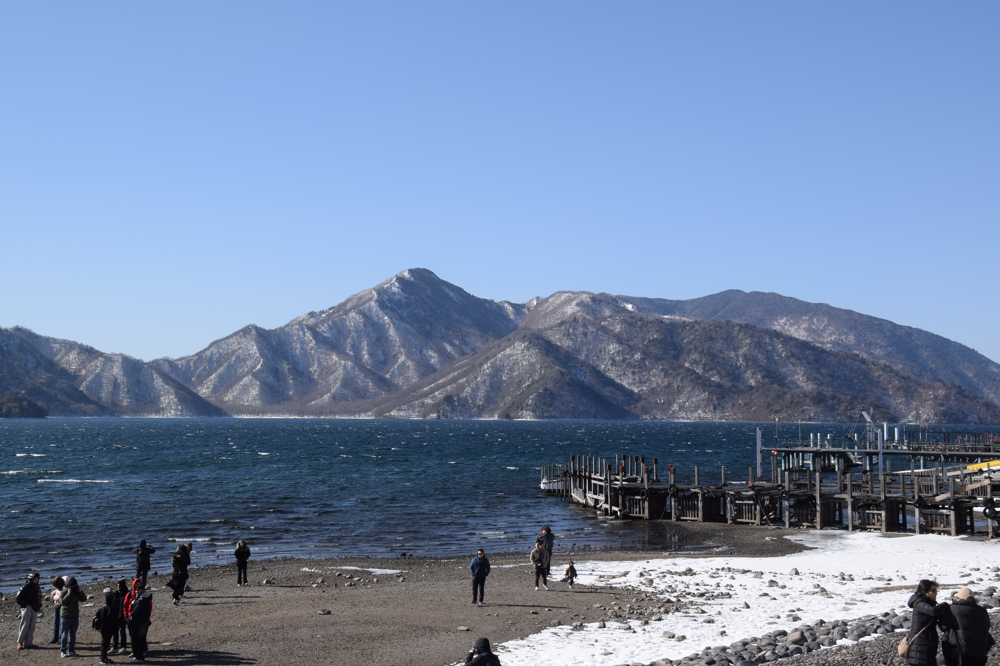
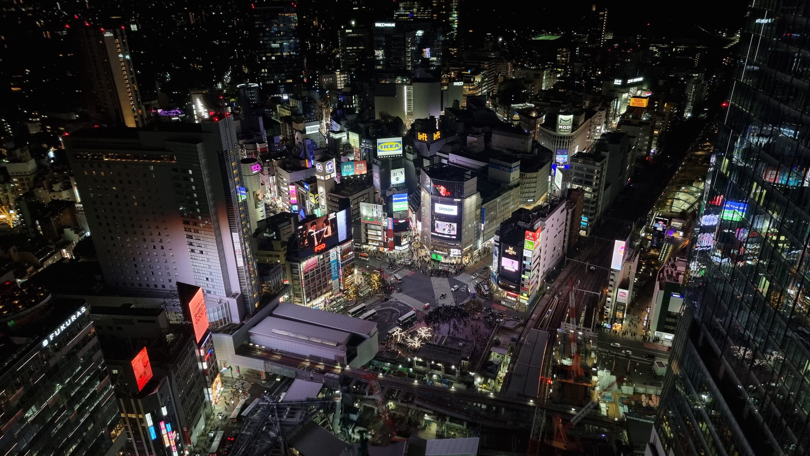
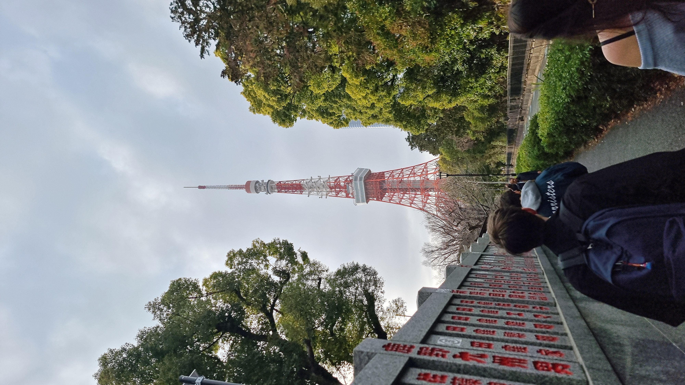
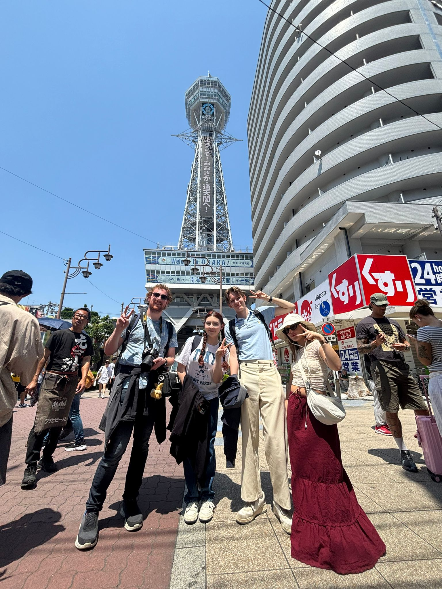
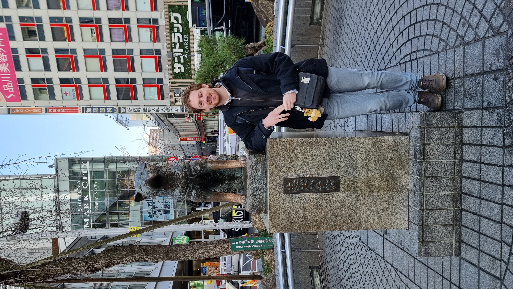
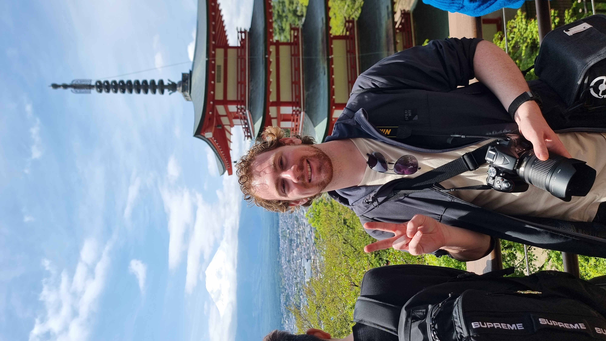
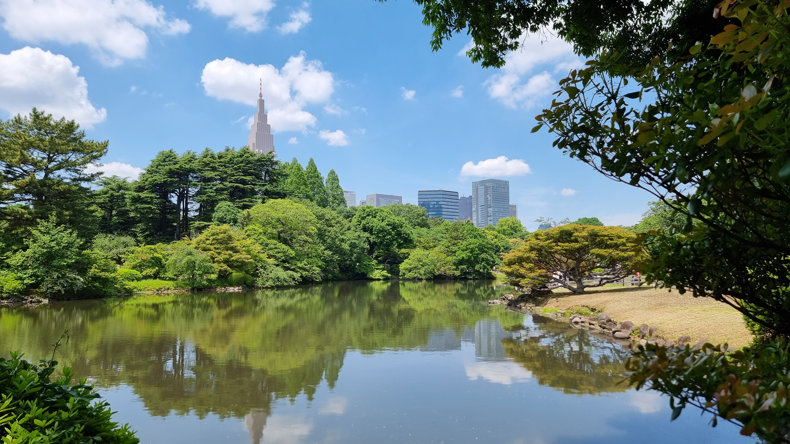
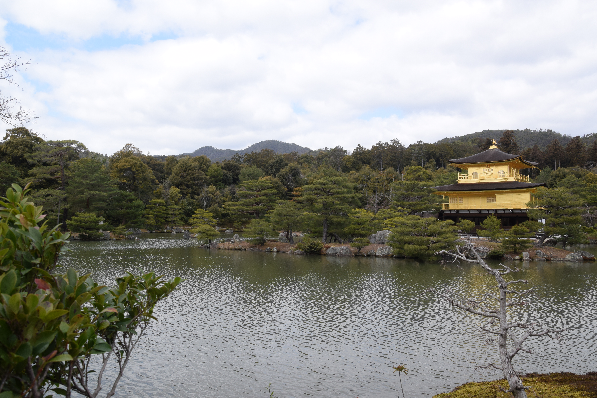
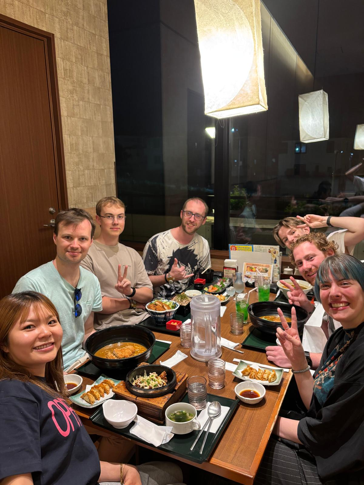
Copyright © Tycho Kerkhofs. All rights reserved.